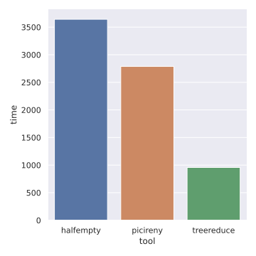
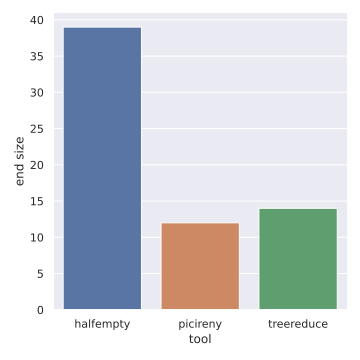
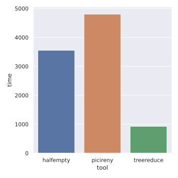

Benchmarks
Contents
Benchmarks#
The following benchmarks compare Halfempty, Picireny, and treereduce on C
and C++ source code; see the overview for general a general
comparison of these tools.
As discussed in the overview, one would generally expect that, as the more
specialized tools, Picireny and treereduce will produce the smallest
(highest-quality) outputs, with Halfempty last.
Note
I am not an expert on many of the tools included in these benchmarks. I have tried my best to understand them, but there may be more effective ways of using them that would lead to better results.
Basic program#
This benchmark involves running each tool with its default settings on a small C program. The “interestingness test” is whether the program still compiles.
The following plots shows the time taken by the different tools (in
milliseconds), and the resulting program size (lower is better). They show that
treereduce is fastest and produces the best output.
 
Basic program with -Werror#
This benchmark is the same as the last, except that the “interestingness test”
is whether the program still compiles with -Werror.
The plots show that treereduce is fastest and produces the best output.

Pre-processed “Hello, world!”#
This benchmark involves running each tool with its default settings on a “hello world” program, after running the C pre-processor. The “interestingness test” is whether the program still compiles.
With a timeout of 300s, only treereduce was able to complete this task. It
reduced the file size from 35123 to 4769 bytes.
Best case#
This benchmark involves running each tool with its default settings on a
small C program. The “interestingness test” always succeeds. All reducers were
able to reduce the test to an empty file. The chart shows that halfempty and
treereduce were nearly instantaneous while Picireny took 4s.
Worst case#
This benchmark involves running each tool with its default settings on a
small C program. The “interestingness test” always fails. The chart shows that
halfempty and treereduce finish almost instantly, but Picireny takes 2s.
Data collection#
The data were collected using this script:
#!/usr/bin/env bash
set -e
rm -f data.csv
export PYTHONOPTIMIZE=1
for tool in halfempty picireny treereduce; do
timeout 300s \
cargo run --quiet --example bench -- \
--config "${2:-default}" \
--jobs "$(nproc)" \
--oracle clang \
--tool "${tool}" \
"${1}" >> data.csv
done